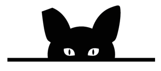

<!DOCTYPE html>
<html lang="en"></html>
<head>
    <meta name="viewport" content=width=device-width, initial-scale=1.0/>
    <style>
            .col-sm-4 {
  background-color: yellow;
  width: 300px;
  border: 15px solid black;
  padding: 50px;
  margin: 20px;
}
      body {
        font-family: "Lato", sans-serif;
      }
      
      .sidepanel  {
        width: 0;
        position: fixed;
        z-index: 1;
        height: 250px;
        top: 0;
        left: 0;
        background-color: #111;
        overflow-x: hidden;
        transition: 0.5s;
        padding-top: 60px;
      }
      
      .sidepanel a {
        padding: 8px 8px 8px 32px;
        text-decoration: none;
        font-size: 25px;
        color: #818181;
        display: block;
        transition: 0.3s;
      }
      
      .sidepanel a:hover {
        color: #f1f1f1;
      }
      
      .sidepanel .closebtn {
        position: absolute;
        top: 0;
        right: 25px;
        font-size: 36px;
      }
      
      .openbtn {
        font-size: 20px;
        cursor: pointer;
        background-color: #111;
        color: white;
        padding: 10px 15px;
        border: none;
      }
      
      .openbtn:hover {
        background-color:#444;
      }
      </style>
      </head>
      <body>
      <div id="mySidepanel" class="sidepanel">
        <a href="javascript:void(0)" class="closebtn" onclick="closeNav()">×</a>
        <a href="Services.html">Services</a>
        <a href="#">Why Trap-Neuter-Return?</a>
        <a href="#">Volunteer</a>
        <a href="#">Catio Tour 2020</a>
      </div>
      
      <button class="openbtn" onclick="openNav()">☰ Menu</button>  
      <h2>Feral Cat Coalition of Oregon</h2>
      <p>Celebrating 25 years of helping 100,000+ cats and their caregivers</p>
      
      <script>
      function openNav() {
        document.getElementById("mySidepanel").style.width = "250px";
      }
      
      function closeNav() {
        document.getElementById("mySidepanel").style.width = "0";
      }
      </script>
  <link rel="stylesheet" href="style.css"/>
    <title>Services</title>
</head>
<body>
  <div class="container">
    <div class="row"></div>
    <p></p>
    <h3>These services are for feral or stray cats only.</h3>
      <p>Feral/Stray cats are trapped, brought to our clinic and returned to the area where they are being fed by caregivers. These services are provided for a suggested donation of $40 per cat, though no cat is turned away for non-payment.</p>
      <div class="col-sm-4">
        <h3>FERAL AND STRAY CAT SERVICES</h3>
        <ul>
          <li>Spay/Neuter Surgery</li>
          <li>Vaccines</li>
          <li>Pain Medication</li>
          <li>Treatment for fleas, mites and other minor medical conditions</li>
          <li>Right ear tip identifier under anethesia</li>
        </ul>
        <p>Cats that appear ill may be tested for feline leukemia(FelV) and feline immunodeficiency virus. More info on our testing policies below.</p>
      </div>
      <h3>For low cost PET cat options:</h3>
        <p>Contact the Oregon Spay/Neuter Fund
        (888) 664-7729 or
        (503) 853-1963 or
        Email: rainbowcurio@hotmail.com
      </p>
   </div>
  </div>
</nav>
  </body>